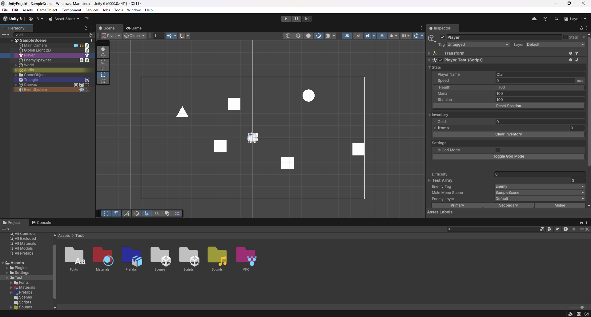
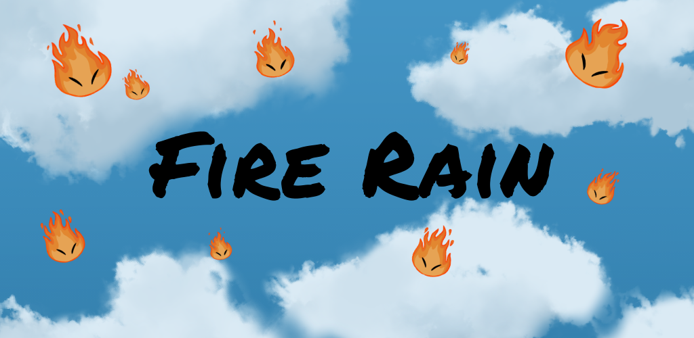
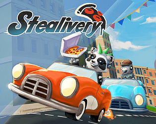
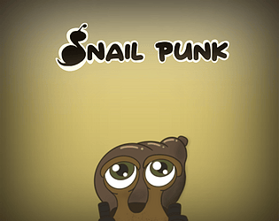
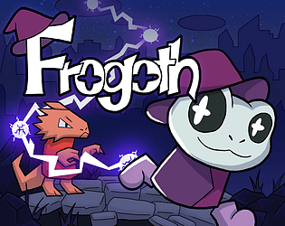

Godot · GDScript

Dung Slinger is a 2D physics platformer where the player is chained to a ball. It was developed by Bold Beetle Games UG (haftungsbeschränkt), where I worked during my mandatory internship at the S4G School for Games.
Read MoreEnhanced Editor
Unity · C#

For my final thesis at the S4G School for Games, I worked on developing prototype Unity asset packs aimed at improving the editor workflow for developers.
Read MoreUnity · C#

Fire Rain is a fast-paced mobile arcade game about protecting your plants from a raging wildfire by slinging a flying turtle at falling embers.
Read MoreUnreal · Blueprints

Stealivery is a two-player local co-op 3D game developed in Unreal Engine during my third semester at the S4G School for Games. The project focused on player interaction and gave me valuable experience with Unreal Engine and the fundamentals of split-screen game development.
Read MoreUnity · C#

SnailPunk is a 3D village builder vertical slice developed in the Unity game engine during my second semester project at the S4G School for Games. It gave me valuable experience with Unity, my first insights into AI, and strengthened my teamwork skills.
Read MoreGodot · GDScript

Frogoth is a 2D platformer developed in the Godot Engine during my first semester at the S4G School for Games. The project focused on player movement and feel, giving me valuable experience with Godot and my first opportunity to develop a game as part of a team.
Read More